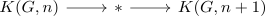

rational cohomology of a connected space with finite homotopy groups
Proposition
Let $X$ be a connected simple anima with finite homotopy groups Then the cohomology with $\mathbb{Q}$ coefficients is given by
Proof
Eilenberg-MacLane space
induction basis $n = 1$
Then $K(G, 1) = BG$ with
by rational group cohomology of a finite group
induction step
Then consider the fiber sequence

where $\Omega K(\mathbb{Q}, n+1) \simeq K(\mathbb{Q})$. Then by induction hypothesis $H^*(K(G,n), \mathbb{Q}) \cong \mathbb{Q}$ hence $K(G,n) \rightarrow *$ is an isomorphism on rational cohomology (+ everything is finitely generated & free). Thus we may apply Leray-Hirsch for the empty fibration to conclude that
which by dimension reasons implies $H^*(K(G,n+1), \mathbb{Q}) \cong \mathbb{Q}$
general case
then use domain weakly homotopy equivalent to sequential limit of Moore-Postnikov stages where the fibers are given by Eilenberg-MacLane spaces of the form $K(G,n)$ Here we may again apply leray hirsch to get
where by induction $H^*(Z_{n}, \mathbb{Q}) \cong \mathbb{Q}$.
here we find generators for the cohomology of
since it is as trivial as it gets (since $Z_{n+1}$ contains one connected component)